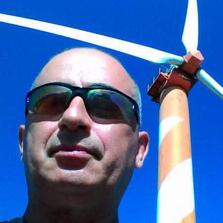

Yakov Zaborov
QA Automation Engineer.
Building reliable tests and performance tools for complex systems.
I’m a QA Automation Engineer with a strong background in software development, performance testing, and cloud infrastructure. I build test frameworks from scratch, tune load testing, and enjoy making systems faster, more stable, and easier to maintain.